使用 buildroot，qemu 调试 linux 内核
准备
- buildroot 源码（buildroot 刻意未以二进制的形式发布，详见：faq-no-binary-packages）
- linux kernel 源码（建议使用 linux 的最新的 release 版本，不要使用 master，博客中使用 6.5 版本）
- qemu（运行 linux kernel 的虚拟机）
- gdb
- vs code
配置 buildroot 与 linux
buildroot 项目的目标是简化 linux 系统镜像的构建过程，因此 buildroot 默认使用 linux 官方仓库的代码构建 x86 平台的目标镜像。编译时也不生成调试需要的信息。
所以我们需要先配置 buildroot，实现：
- 使用适用于构建 qemu 镜像的配置
- 使用本地的 linux 源码
- 在编译时添加用于 debug 的符号信息
- 相关的基础配置
使用适用于构建 qemu 镜像的配置
在 buildroot 的根目录下使用 make qemu_x86_64_defconfig 使用 x86_64 平台 qemu 的默认配置。
使用本地 linux 源码
在 buildroot 的根目录下创建 local.mk 文件，添加内容 LINUX_OVERRIDE_SRCDIR=${path_to_your_kernel_source_code}，指定构建使用的源码。关于 local.mk 以及变量 LINUX_OVERRIDE_SRCDIR 的说明见：Advanced usage。
buildroot 根目录下使用 make menuconfig 命令打开 buildroot 配置面板，如下。
可以使用
make help查看所有选项，需要注意的是make help并不是 make 本身的功能，这是一种规约，使用 help 作为一个 make 的 target，用于说明当前项目 make 使用的帮助文档。
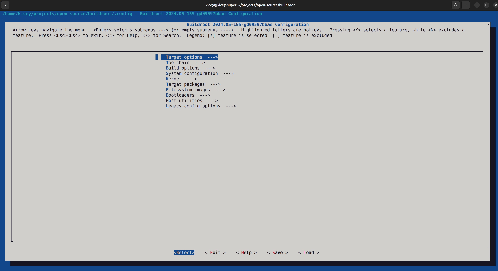
修改 Kernel -> Kernel version，至源码当前的版本，注意配置界面的左上角，可以在此处看到配置界面的当前“路径”。
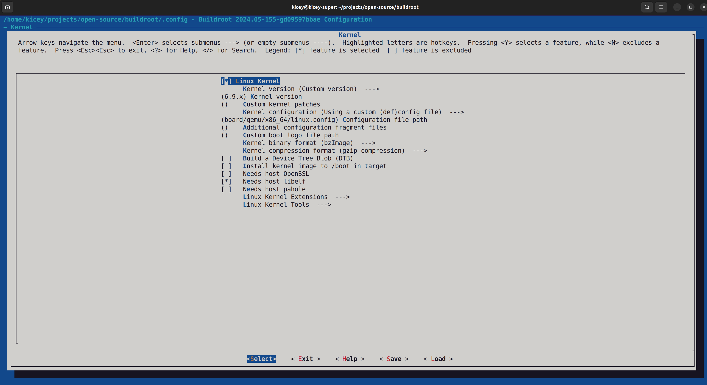
修改 Toolchain -> Custom kernel headers series 至源码相同的版本，buildroot 需要提前确定头文件的版本以正确的编译根文件系统。
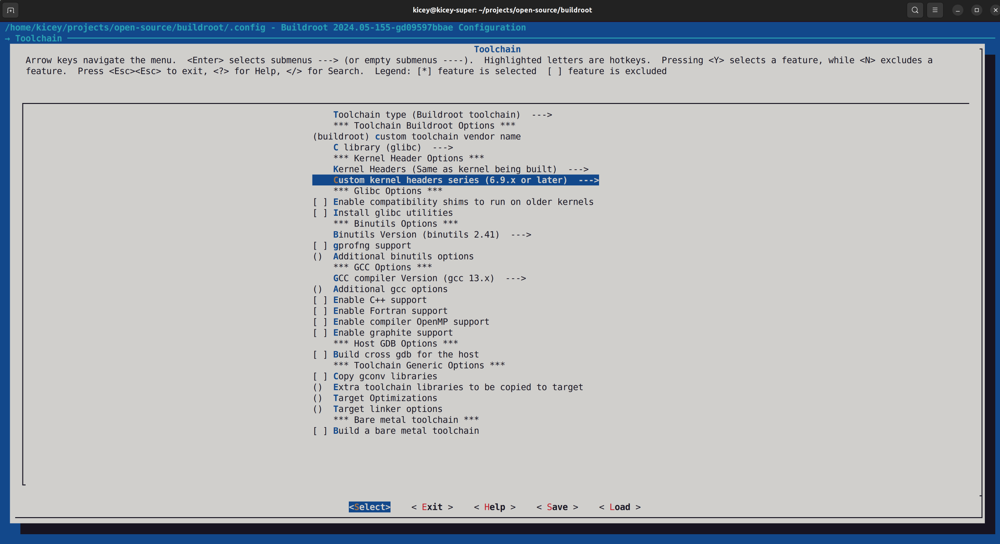
编译时添加符号信息
在 buildroot 使用 make linux-menuconfig 进入目标 linux 的配置界面，进入 Kernel hacking（名副其实😀），开启 debug 配置。
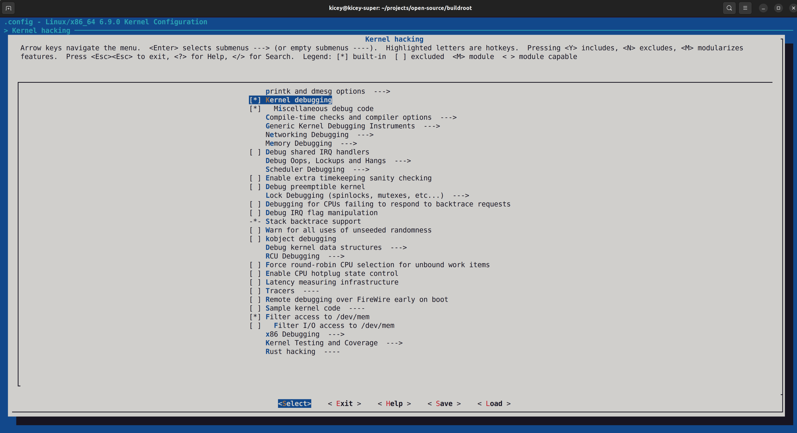
选择正确的调试信息（默认无调试信息，选择默认 DWARF 版本的调试信息即可）
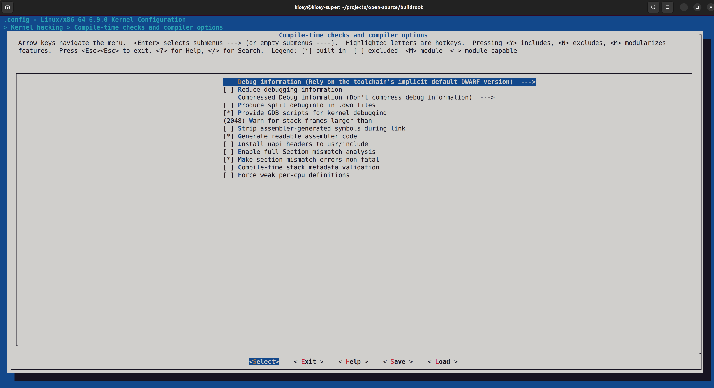
暂停浏览 Kernel hacking 中的配置，会发现该配置界面中包含了众多配置选项，包含网络，驱动，内存等等。当前我们打开最基础的 debug 开关即可。
编译内核及根文件系统
在 buildroot 根路径下使用 make 执行编译。
编译结束之后：
在 ./output/images 中包含 kernel 和 rootfs 的镜像，以及 qemu 的启动脚本；
图中包含了额外的 rootfs.ext4 是我个人配置时选择了 ext4 文件系统，仅调试不需要做这一步配置，流程一致。
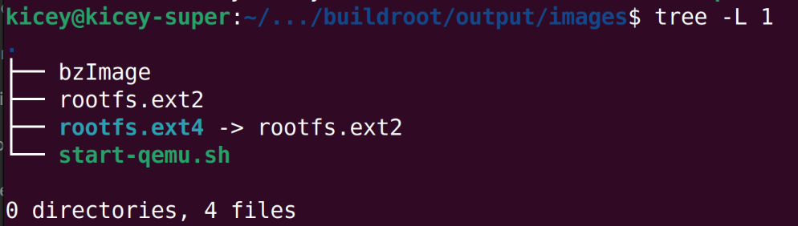
在 ./output/build/linux-custom 中包含一个 vmlinux 文件，这是未压缩的原始内核镜像。使用 objdump --debugging ./vmlinux 命令验证其中包含 gdb 所需的 debug 符号信息（存在大量输出即可）。
通过 qemu 运行内核，并做 gdb 的初步验证
修改 start-qemu.sh 启动脚本
在 qemu 的启动命令中加入 -s -S 两个选项；在 -append 选项的配置中加入 nokaslr，使 qemu 以调试的方式运行 kernel。qemu 会自动的启动 gdb server。
启动 qemu 虚拟机 kernel
进入 ./output/build/linux-custom 路径，执行 ./start-qemu.sh。将出现
VNC server running on 127.0.0.1:5900
代表虚拟机启动成功，并且由于处于调试模式，暂停执行，如果在之后的 gdb 中选择继续执行，将可以看到登陆提示（如下）。
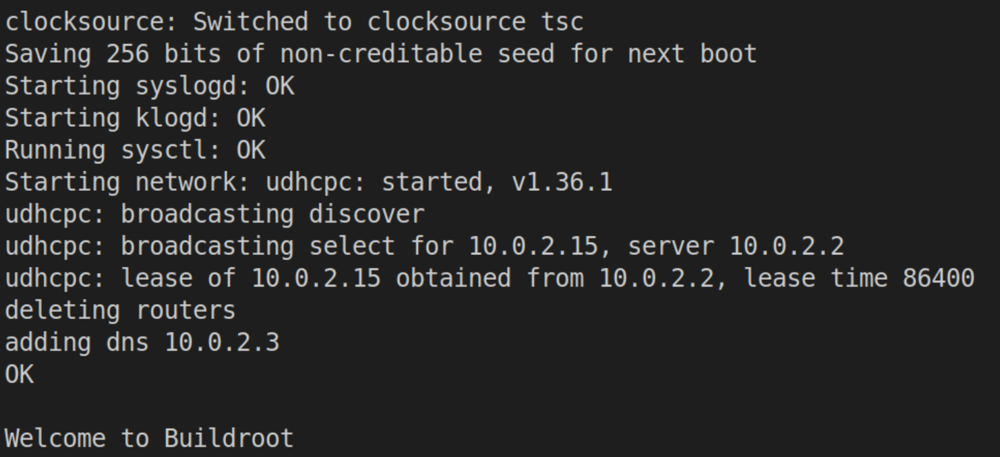
需要注意的是，不熟悉 gdb 的开发者不易准确的判断调试命令对执行过程的影响，如果调试出现问题请回到站 qemu 窗口查看虚拟机状态，适时重启，重新开始调试。
命令行启动 gdb
-
进入
./output/build/linux-custom路径（任何路径均可，该路径更方便后续操作）； -
执行
gdb ./vmlinux进入 gdb -
将得到一个警告：
bash
warning: File "/.../buildroot/output/build/linux-custom/scripts/gdb/vmlinux-gdb.py" auto-loading has been declined by your `auto-load safe-path' set to "$debugdir:$datadir/auto-load".
-
为了解决上一步中的警告，我们在
./output/build/linux-custom下添加.gdbinit文件，加入以下内容add-auto-load-safe-path .。 之后再次执行前 3 步，这个警告不再出现。 -
执行 target remote localhost:1234 连接 qemu 中的 gdb server
-
使用
l查看当前执行的代码行，将看到以下结果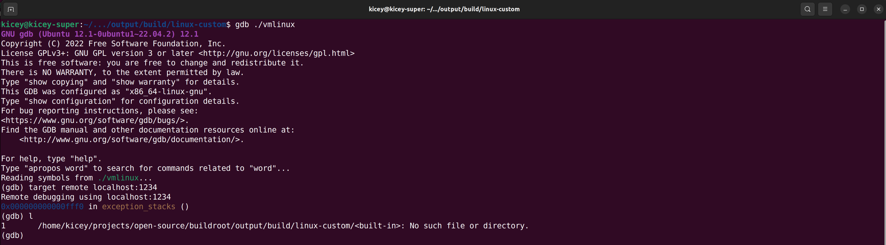
原因在于当前执行的代码属于 bootloader 的范畴，也就是还没有执行到 kernel 中的代码。 -
添加断点
b start_kernel，是虚拟机在启动 kernel 时停止，结果如下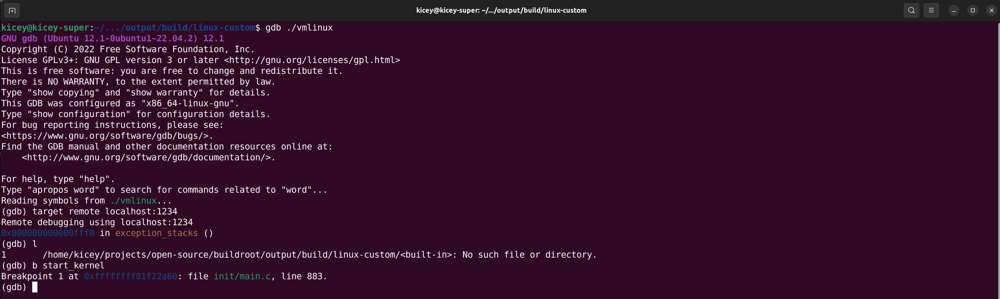
-
使用
continue执行到断点，然后使用l查看当前位置的代码，结果如下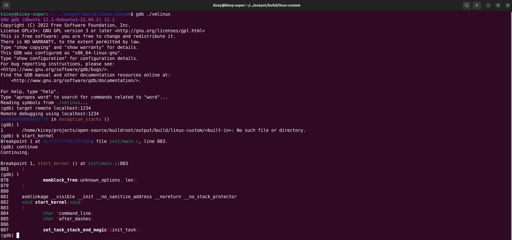
-
查看遇到的第一个变量
init_task（iscsi_task 结构体的一个引用）的值，
```c struct iscsi_task { / * Because LLDs allocate their hdr differently, this is a pointer * and length to that storage. It must be setup at session * creation time. / struct iscsi_hdr hdr; unsigned short hdr_max; unsigned short hdr_len; / accumulated size of hdr used / / copied values in case we need to send tmfs */ itt_t hdr_itt; __be32 cmdsn; struct scsi_lun lun;
int itt; /* this ITT */
unsigned imm_count; /* imm-data (bytes) */
/* offset in unsolicited stream (bytes); */
struct iscsi_r2t_info unsol_r2t;
char *data; /* mgmt payload */
unsigned data_count;
struct scsi_cmnd *sc; /* associated SCSI cmd*/
struct iscsi_conn *conn; /* used connection */
/* data processing tracking */
unsigned long last_xfer;
unsigned long last_timeout;
bool have_checked_conn;
/* T10 protection information */
bool protected;
/* state set/tested under session->lock */
int state;
refcount_t refcount;
struct list_head running; /* running cmd list */
void *dd_data; /* driver/transport data */
}; ```
结果如下
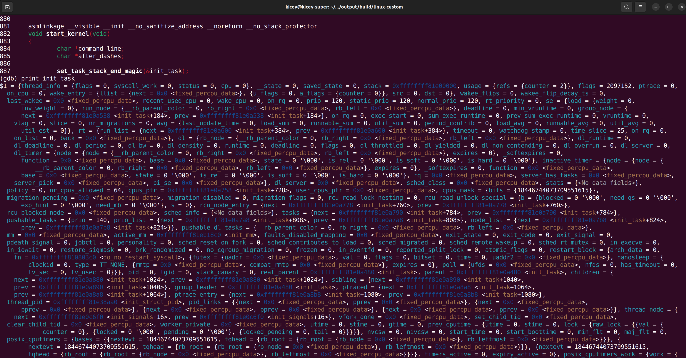
到此为止，linux kernel 的调试已经做到了，可以执行一下其他的 gdb 调试命令，比如下一步，添加断点，执行到断点，查看内存信息等。
vscode 辅助调试
配置 vscode 及插件
-
安装插件 Native Debug
-
打开 linux 源码，注意版本，在项目路径下添加
./vscode/launch.json文件，内容如下：json { "version": "0.2.0", "configurations": [ { "type": "gdb", "request": "attach", "name": "Attach to QEMU Kernel", "executable": "/home/kicey/projects/open-source/buildroot/output/build/linux-custom/vmlinux", "target": "localhost:1234", "remote": true, "cwd": "${workspaceRoot}", "gdbpath": "/usr/bin/gdb", } ], "postRemoteConnectCommands": [ { "text": "source ${workspaceFolder}/.gdbinit" } ], }
注意修改 executable 项到直接使用 gdb 调试时的 vmlinux。
-
在 linux 项目的路径下添加文件
.gdbinit，内容如下：bash add-auto-load-safe-path / -
先在
start_kernel函数处设置断点，再如手动调试时一样通过脚本启动 qemu kernel 虚拟机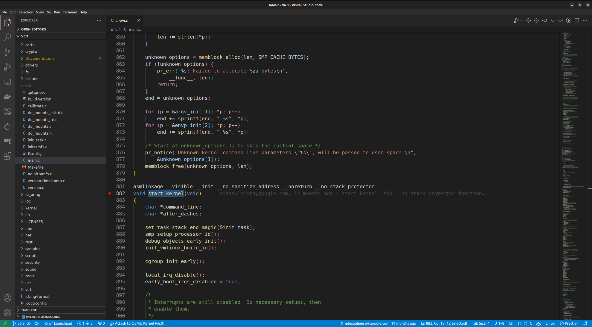
最后连接调试（点左上角的绿色箭头）
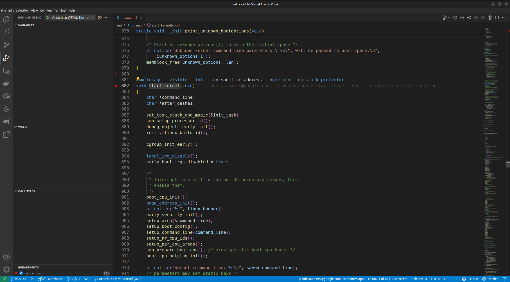
可以看到，断点生效，变量查看生效
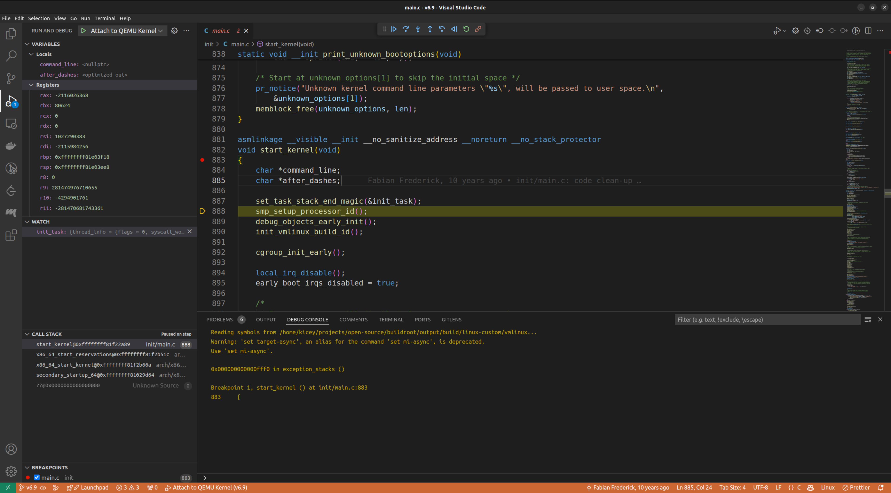
结语
linux 内容的调试配置难度总体还算正常，特别是使用 buildroot 辅助的情况下。
在可以进行内容调试之后，许多平常只能查阅别人描述的系统功能或行为，我们可以先找到对应的处理代码，然后调试验证了；从口说无凭到代码就是这么跑的！了（😀）。学习 linux 时更加的有的放矢，脚踏实地。
在遇到一些奇怪的问题时（例如各个发行版的驱动适配，笑）也可以尝试自己解决。
感谢阅读，如有问题，还请不吝赐教。